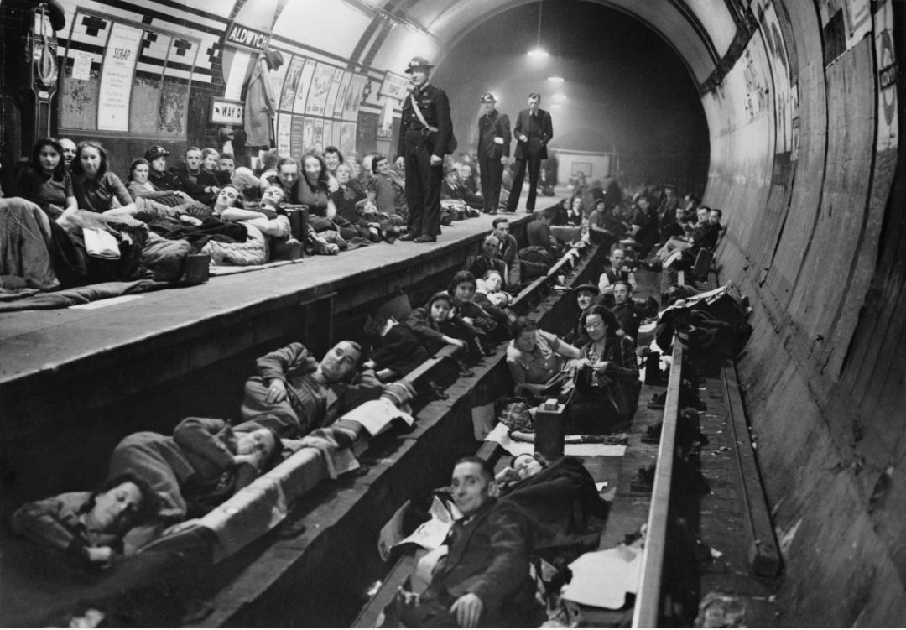

Population : Civils britanniques
Lieu : Londres et grandes villes du Royaume-Uni
Période : 7 septembre 1940 – 11 mai 1941
Durant le Blitz, les civils britanniques deviennent la première cible des bombardements allemands. Nuit après nuit, ils subissent les attaques de la Luftwaffe, perdent leurs maisons, leurs proches, et doivent s’adapter à une vie rythmée par les sirènes, les abris et les ruines.
Les habitants se réfugient dans les stations de métro, les abris Anderson ou Morrison, ou dans les caves. Les coupures d’électricité, les incendies, les destructions massives et les pénuries deviennent le quotidien. Malgré tout, la population continue de travailler, d’aider les secours et de maintenir une forme de normalité.
Les civils jouent un rôle essentiel dans la résistance britannique. Leur endurance, leur solidarité et leur capacité à reconstruire immédiatement après chaque raid deviennent un symbole national. Les volontaires de la défense civile (ARP, pompiers, secouristes) sont en première ligne pour sauver des vies.
La résistance des civils du Blitz devient un élément central de l’identité britannique durant la guerre. Leur courage contribue directement à l’échec de la stratégie allemande visant à briser le moral du pays. Le Blitz reste aujourd’hui un symbole de résilience collective.